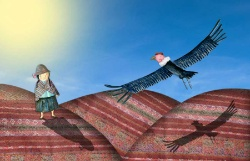
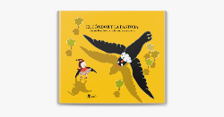

Parte 1Había una pastora que siempre se dedicaba a pastar su ganado sola en las pampas y, en esas circunstancias la observaba un cóndor. Con el pasar de los días éste se fue enamorando de la chica. Un día de esos se le acercó a la chica convertido en un joven bien vestido con un traje negro y con camisa blanca y con una chalina blanca. Acercándosele conversaron largo tiempo, luego de presentarse cada uno. Seguidamente se pusieron a jugar a cargarse mutuamente mientras el otro serraba los ojos, así sucesivamente hasta que de repente cuando le tocaba al joven, se convirtió en cóndor y se cargó a la pastora a los cerros más altos de la cordillera. Al llegar al lugar la chica se despertó y se quedó sorprendida y se puso a llorar y llorar, le decía al cóndor que la regresara a su casa, pero el joven no quería pues se había enamorado de la chica y la tenía para su novia.  Parte 2El cóndor, para que la chica no llore, le traía carne cruda para que coma, pero la chica siempre la rechazaba, entonces el cóndor iba en busca de servicios para cocinar y traía ollas rotas recogidas del desperdicio. La chica, la tiraba toda molesta, así pasaron un buen tiempo hasta que tuvieron sus tres hijitos. Un día, cuando los padres de la chica lo buscaban desesperados, se encontraron con un picaflor “lurinsitu” quien sabía dónde estaba la chica y contó a los padres. A cambio de la información le daban comida de todo el jardín que tenían. Entonces, haciendo el trato, el picaflor partió a la casa del cóndor, al llegar mató a sus hijos de la chica y a ella se la llevó a la casa de sus padres.  Parte 3Cuando el cóndor regresó a su casa, vio a sus hijos muertos y uno de ellos se había salvado, la chica no estaba, entonces se puso a llorar le pregunto a su hijo ¿dónde está tu madre? y el condorcito de digo el lurinsitu se lo ha llevado, también preguntaba a otras aves de lo que había pasado, se puso a buscar al responsable; cuando se le avisó quién era el culpable, éste fue en busca de picaflor, al llegar a su casa le dijo: - lurinsitu sal que quiero hablar contigo. Al escuchar la voz del cóndor, el lurinsitu se preparaba en su cuarto y respondía: -ahorita me estoy poniendo mi camisa. El cóndor volvía a llamarle y el lurinsitu le respondía: -ahorita me estoy poniendo las medias. El cóndor volvía a preguntar y el lurinsitu respondía ahorita me estoy poniendo las ojotas, así sucesivamente hasta que lurinsitu ya había hecho un hueco para salir, de tanta insistencia el cóndor se amargo y entro a su casa y al lurinsitu le agarro cuando estaba saliendo por el hueco y se lo ha comido enterito, cuando excretó salieron picaflores pequeños. Por eso hoy se dice que los picaflores son pequeños.
|
Projecto v1
Cuento 2 : El Cóndor y la Pastora
Obra publicada con Licencia Creative Commons Reconocimiento Compartir igual 4.0